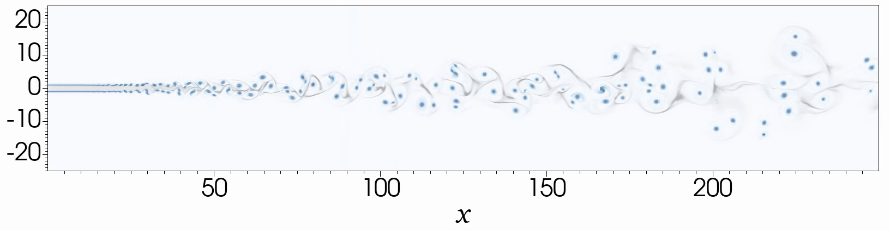
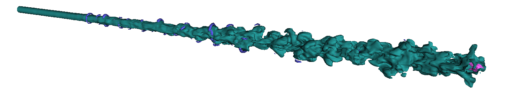
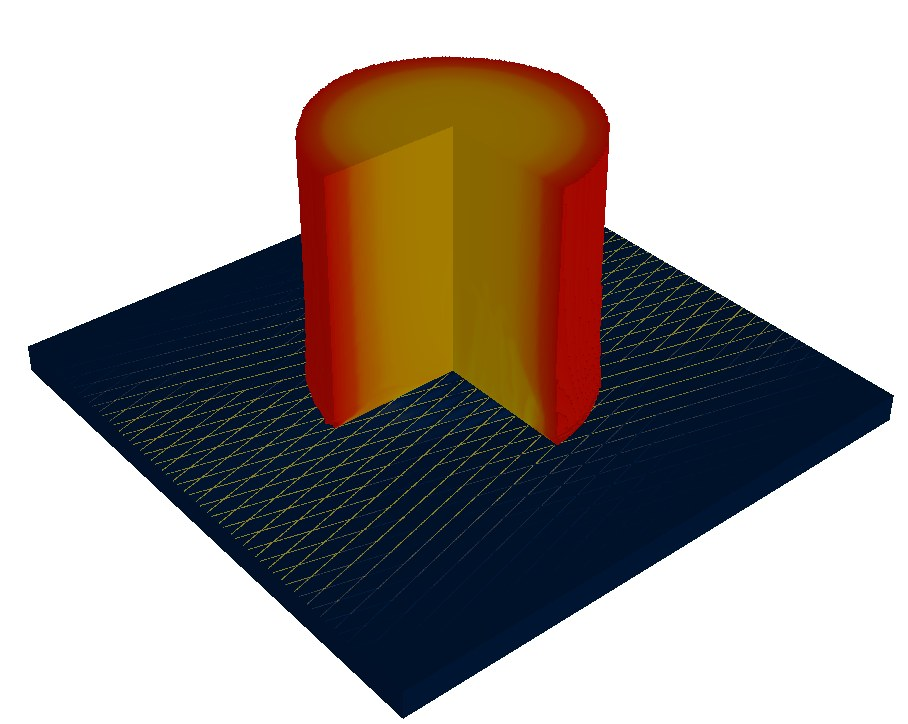
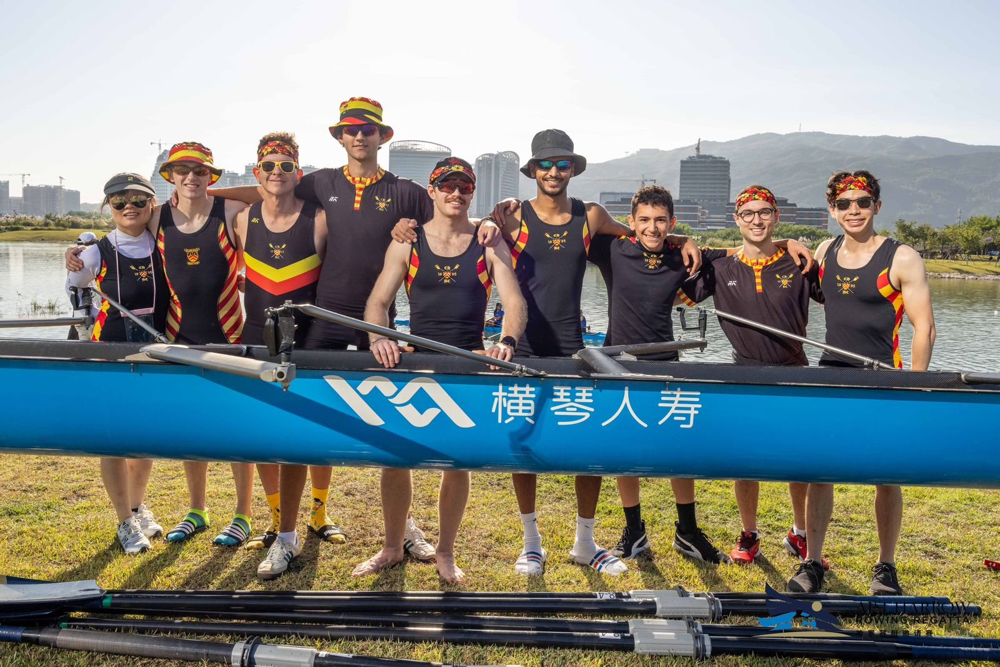

PhD researcher in physics at the University of Cambridge, simulating how aircraft contrails form and evolve.
I'm a physics PhD student at the University of Cambridge, where I build multiphysics simulations of contrail formation and evolution. Contrails may account for a large share of aviation's warming effect, and understanding how they form is the first step towards avoiding them. My PhD is part of the Cambridge–Boeing collaboration and is funded by Boeing, alongside a PhD scholarship from the German Academic Scholarship Foundation (Studienstiftung).
I studied physics at UCL, focusing on condensed matter in my master's year. Along the way I found I enjoyed the computing side most, so I moved to scientific computing for my MPhil at Cambridge. Since then my work has been in numerical methods and high-performance computing, applied to problems in aviation and climate.
Outside research I supervise Cambridge undergraduates and tutor, and I've organised speaker events and a college research conference. I was also men's co-captain of the Clare Hall Boat Club. I speak English and German fluently, and some Greek.
A contrail starts in the hot, particle-laden exhaust jet behind an engine. As the jet mixes with cold ambient air, water vapour condenses and freezes onto soot and other particles. Which particles activate, and how many ice crystals form, decides how long the contrail lasts and how much it warms the climate.
I simulate this process from the engine nozzle onwards. The model solves the compressible flow of the air–vapour mixture together with separate particle phases for soot, sulfates and water droplets, using adaptive mesh refinement and large-eddy simulation on the CSD3 supercomputer in Cambridge. I validate it step by step, from plane jets to round jets to particle-laden jets, and I'm comparing it one-to-one with contrails produced in a cold-chamber lab facility at the University of Toronto.
The goal is a model that links engine and exhaust conditions to the contrail they produce, so that cleaner engines and contrail-avoiding flight paths can be designed with confidence. The work is part of the Cambridge–Boeing collaboration, with Nikos Nikiforakis's group in Cambridge.


I'm the Speakers' Officer of the Cambridge University German Society, where I invite and host guest speakers. Past guests include Volkmar Denner, former CEO of Bosch.
Modern airliners are built from carbon-fibre composites, which conduct electricity far worse than aluminium. To survive a lightning strike, they carry a lightning strike protection (LSP) layer such as an expanded copper foil mesh that spreads the current away from the attachment point.
For my master's project I simulated a lightning arc attaching to a protected panel and modelled how the current flows through the mesh.

I was men's co-captain of the Clare Hall Boat Club for the 2025–26 season.
